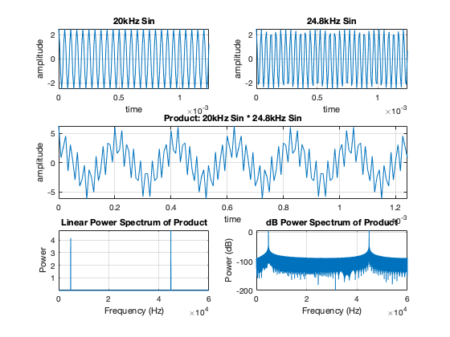
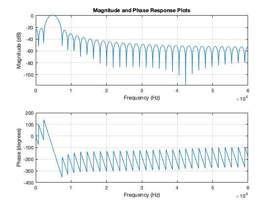
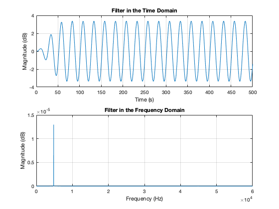

clear;close all
Fs=120000;
Fn=Fs/2;
t=0:1/Fs:2;
s1=2.5*cos(2*pi*t*20e3);
s2=2.5*cos(2*pi*t*24.8e3);
x = s1 .* s2;
figure(1)
orient tall
subplot(321),plot(t(1:150),s1(1:150));grid;axis tight;
title('20kHz Sin');xlabel('time');ylabel('amplitude')
subplot(322),plot(t(1:150),s2(1:150));grid;axis tight;
title('24.8kHz Sin');xlabel('time');ylabel('amplitude')
subplot(3,2,[3 4]),plot(t(1:150),x(1:150));grid;axis tight;
title('Product: 20kHz Sin * 24.8kHz Sin');xlabel('time');ylabel('amplitude')
NFFT= 2^(nextpow2(length(x)));
FFTX = fft(x,NFFT);
NumUniquePts = ceil((NFFT+1)/2);
FFTX = FFTX(1:NumUniquePts);
MX = abs(FFTX);
MX = MX/length(x);
MX = MX.^2;
MX = MX*2;
MX(1) = MX(1)/2;
if ~rem(NFFT,2)
MX(end) = MX(end)/2;
end
f = (0:NumUniquePts-1)*Fs/NFFT;
subplot(325),plot(f,MX);grid;axis tight;
title('Linear Power Spectrum of Product'); xlabel('Frequency (Hz)');
ylabel('Power');
subplot(326),plot(f,10*log10(MX));grid;axis tight;
title('dB Power Spectrum of Product'); xlabel('Frequency (Hz)');
ylabel('Power (dB)');
figure(2)
load('filt1.mat')
freqz(filt1.tf.num, filt1.tf.den, 1000,120e3);
title('Magnitude and Phase Response Plots');
y = filter(filt1.tf.num, filt1.tf.den, x);
figure(3)
subplot(2, 1,1)
t = 1:1:500;
plot(t, y(1:500));
title('Filter in the Time Domain');
xlabel('Time (s)');
ylabel('Magnitude (dB)');
grid on
FFTY = fft(y,NFFT)/length(y);
FFTY = 2*FFTY(1:NumUniquePts);
MY = abs(FFTY);
MY = MY/length(y);
subplot(2,1,2)
plot(f, MY);
title('Filter in the Frequency Domain');
xlabel('Frequency (Hz)');
ylabel('Magnitude (dB)');
grid on
  